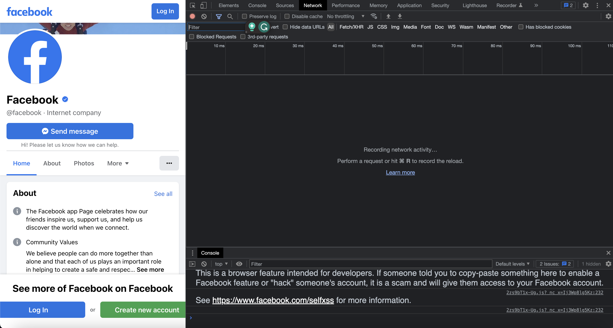

I monitored network traffic for Facebook. I found that the network traffic kept changing as I scrolled or interacted with the page. The developer tool is very organized.
Before performing a request on Facebook

After clicking on "see all" under Facebook's official account.